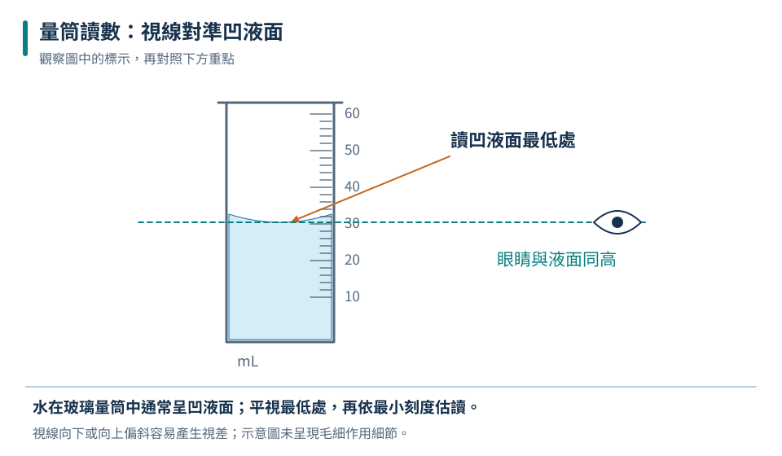
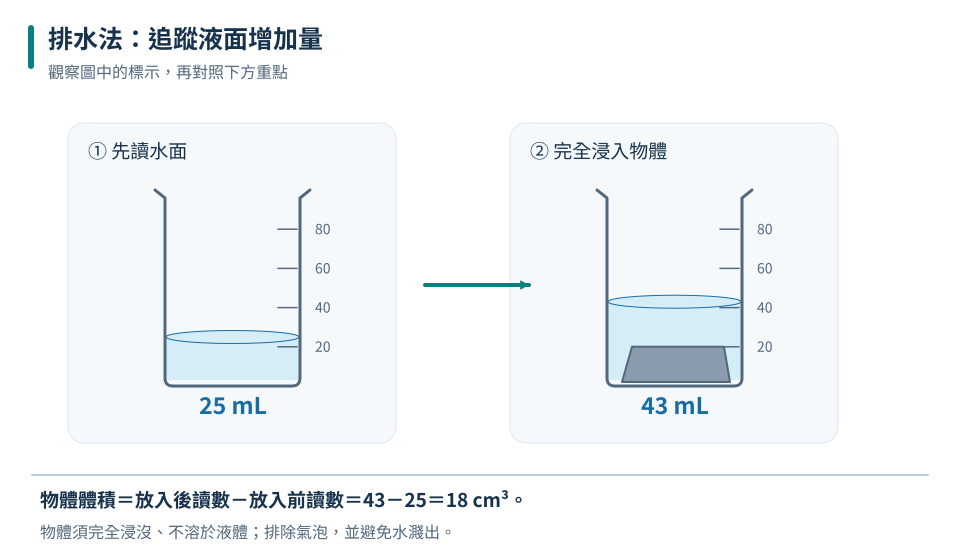
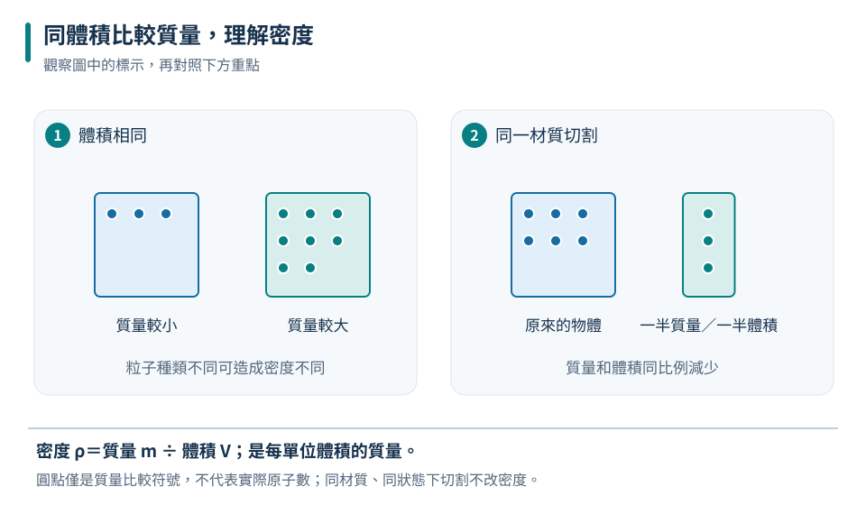
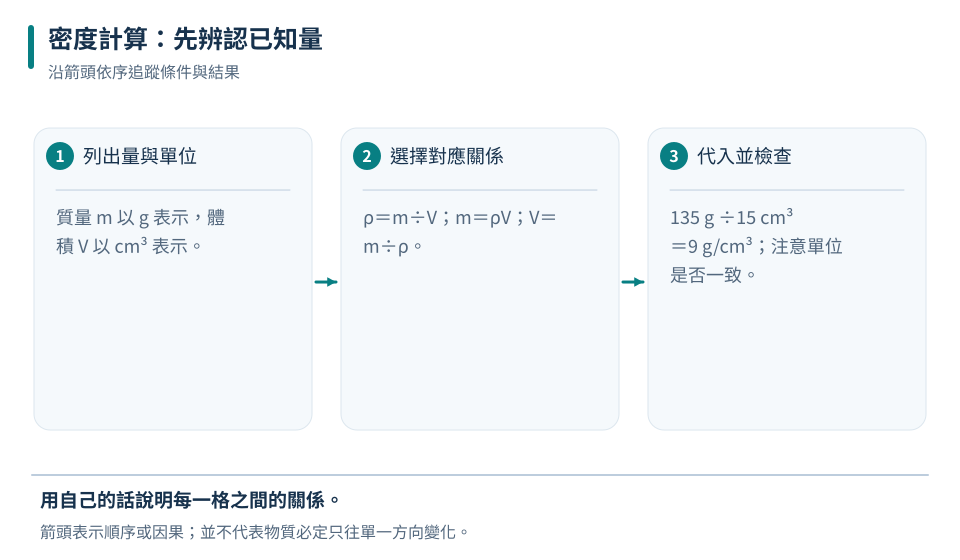
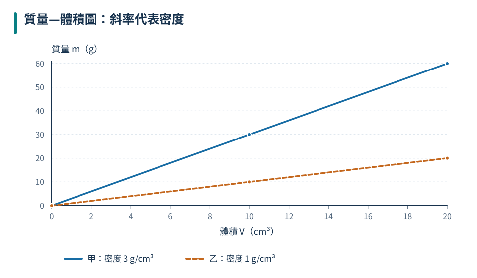
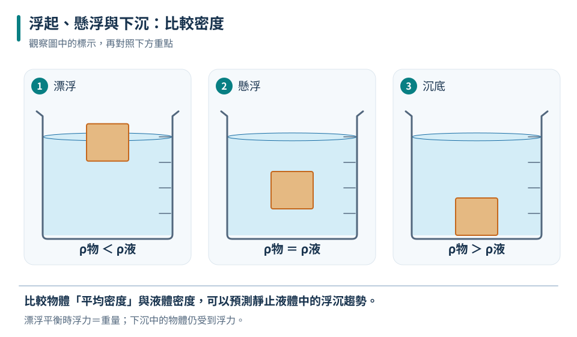
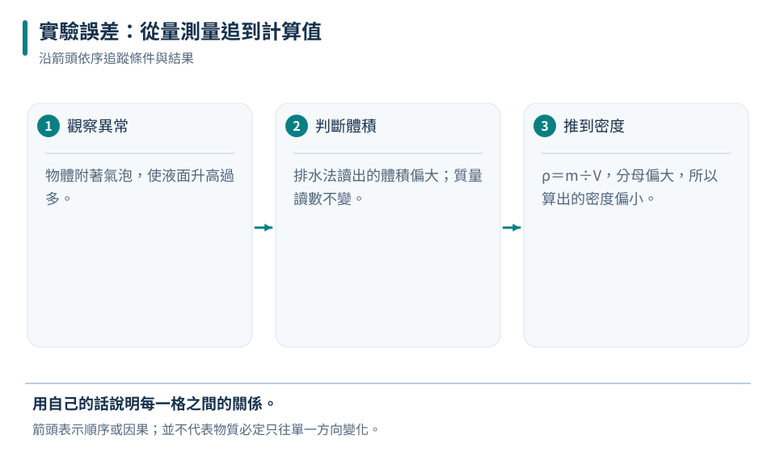

質量
表示物體所含物質的多寡，常用單位是 g、kg，使用天平測量。
國中理化會考核心
從「物體占多少空間」開始，學會正確測量體積，再用質量與體積判斷物質的密度。完成本章後，你能處理排水法、密度計算、圖表與實驗誤差。
MEASUREMENT

先追蹤圖中的物體與箭頭，再用本節概念說明它們的關係。
測量不是只寫一個數字。完整的測量結果必須包含「數值」和「單位」，並使用合適的量具。
科學探究從觀察與問題開始，再提出可用證據檢驗的假說，設計實驗、紀錄資料，最後比較證據是否支持假說。結果不符預期時，要檢查方法或修正解釋，不能刪掉不喜歡的數據。
例如研究「鹽的顆粒大小是否影響溶解快慢」，只改變顆粒大小，固定鹽量、水量、水溫及攪拌方式，再比較溶解所需時間。
表示物體所含物質的多寡，常用單位是 g、kg，使用天平測量。
表示物體占有空間的大小，常用單位是 cm³、mL、L。
1 mL＝1 cm³
1 L＝1000 mL
1 kg＝1000 g
眼睛高於液面時，液面看起來偏高，量筒讀值會偏大；眼睛低於液面則相反。
VOLUME

先追蹤圖中的物體與箭頭，再用本節概念說明它們的關係。
物體完全浸入液體後，液面上升的體積，就是物體的體積。
互動排水法
物體完全浸入後，液面增加多少，物體體積就是多少。
43－25＝18，因此石塊體積是 18 cm³。
跟著做
42.6－25.0＝17.6 mL
換單位17.6 mL＝17.6 cm³
用細線連接沉子。先量沉子排水量，再量沉子加物體的排水量；兩次差值就是物體體積。
改用不會溶解它、也不會與它反應的液體，例如食用油，再使用排液法。
DENSITY

先追蹤圖中的物體與箭頭，再用本節概念說明它們的關係。
密度比較的是「相同體積中，哪一種物質含有較多質量」。密度越大，代表同樣大小時通常越重。
同種物質：切成大小不同的兩塊，密度仍相同。
狀態改變：質量不變但體積改變時，密度會改變。
單位換算：1 g/cm³＝1000 kg/m³。
大塊木頭的質量可以比小鐵塊大，但木頭的密度仍可能比鐵小。比較密度時必須同時看質量和體積。
CALCULATION

先追蹤圖中的物體與箭頭，再用本節概念說明它們的關係。
求密度：ρ＝m÷V
求質量：m＝ρ×V
求體積：V＝m÷ρ
完整示範
已知：m＝140.8 g，V＝17.6 cm³
2公式：ρ＝m÷V
3代入：140.8÷17.6＝8.0
4答案：8.0 g/cm³
DATA

先追蹤圖中的物體與箭頭，再用本節概念說明它們的關係。
圖中甲的線較陡，所以甲的密度大於乙。
截距也有意義
V＝0 時的 40 g 是空容器質量；V 的係數 1.20 是液體密度，單位為 g/cm³。
FLOAT OR SINK

先追蹤圖中的物體與箭頭，再用本節概念說明它們的關係。
先比較物體和液體的密度，就能預測物體上浮、懸浮或下沉。
浮沉模擬器
物體密度 0.80 g/cm³，小於水的 1.00 g/cm³，因此上浮。
加入食鹽後，水溶液密度增加。當食鹽水密度大到足以支撐雞蛋，雞蛋就會上浮。
若小球密度大於上層液體、但小於下層液體，小球會停在兩層液體交界附近。
INQUIRY

先追蹤圖中的物體與箭頭，再用本節概念說明它們的關係。
研究者主動改變的條件，例如液體溫度。
實驗中觀察或測量的結果，例如密度。
其他應保持相同的條件，例如液體種類與量具。
| 操作問題 | 體積測量 | 算得密度 |
|---|---|---|
| 物體表面附著氣泡 | 偏大 | 偏小 |
| 物體未完全浸入 | 偏小 | 偏大 |
| 量筒由上往下看 | 讀值偏大 | 依前後讀法而定 |
| 天平未扣除容器質量 | 不影響 | 偏大 |
不能只因數字不同就刪除。若有明確原因，例如黏有氣泡或液體灑出，才可排除並說明；其餘資料可重複測量後取平均。
INTERACTIVE LAB
先作答，再依提示修正想法。答對後按「下一題」繼續。
挑戰一
選出最適合的量具或方法。
選一個答案開始挑戰。
挑戰二
比較物體和液體密度，判斷最後狀態。
選一個答案開始挑戰。
REVIEW
規則物體用公式；不規則物體用排液法。
V物＝V後－V前物質單位體積所含的質量。
ρ＝m／V質量為縱軸、體積為橫軸時：
斜率＝密度物體與液體比較密度。
小則浮 大則沉CHAPTER TEST
先獨立作答，再查看解析。答題紀錄只保存在這台裝置的瀏覽器中。